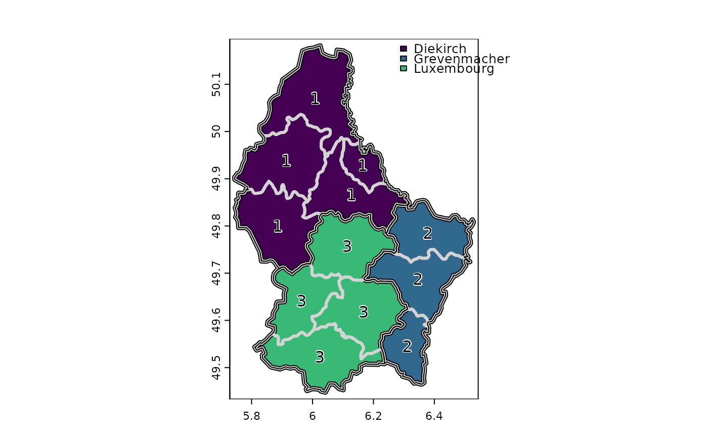

aggregate.RdAggregate a SpatRaster to create a new SpatRaster with a lower resolution (larger cells). Aggregation groups rectangular areas to create larger cells. The value for the resulting cells is computed with a user-specified function.
Or aggregate ("dissolve") a SpatVector.
# S4 method for SpatRaster aggregate(x, fact=2, fun="mean", ..., cores=1, filename="", overwrite=FALSE, wopt=list()) # S4 method for SpatVector aggregate(x, by=NULL, dissolve=TRUE, fun="mean", ...)
| x | SpatRaster |
|---|---|
| fact | positive integer. Aggregation factor expressed as number of cells in each direction (horizontally and vertically). Or two integers (horizontal and vertical aggregation factor) or three integers (when also aggregating over layers) |
| fun | function used to aggregate values. Either an actual function, or for the following, their name: "mean", "max", "min", "median", "sum" and "modal" |
| ... | additional arguments passed to |
| cores | positive integer. If |
| filename | character. Output filename |
| overwrite | logical. If |
| wopt | list with named options for writing files as in |
| by | character. The variable used to aggregate the geometries |
| dissolve | logical. Should borders between aggregated geometries be dissolved? |
Aggregation starts at the upper-left end of a SpatRaster. If a division of the number of columns or rows with factor does not return an integer, the extent of the resulting SpatRaster will be somewhat larger then that of the original SpatRaster. For example, if an input SpatRaster has 100 columns, and fact=12, the output SpatRaster will have 9 columns and the maximum x coordinate of the output SpatRaster is also adjusted.
The function fun should take multiple numbers, and return a single number. For example mean, modal, min or max.
It should also accept a na.rm argument (or ignore it as one of the 'dots' arguments).
SpatRaster
r <- rast() # aggregated SpatRaster, no values ra <- aggregate(r, fact=10) values(r) <- runif(ncell(r)) # aggregated raster, max of the values ra <- aggregate(r, fact=10, fun=max) # multiple layers s <- c(r, r*2) x <- aggregate(s, 2) ## SpatVector f <- system.file("ex/lux.shp", package="terra") v <- vect(f) va <- aggregate(v, "ID_1") plot(va, "NAME_1", lwd=5, plg=list(x="topright"), mar=rep(2,4))